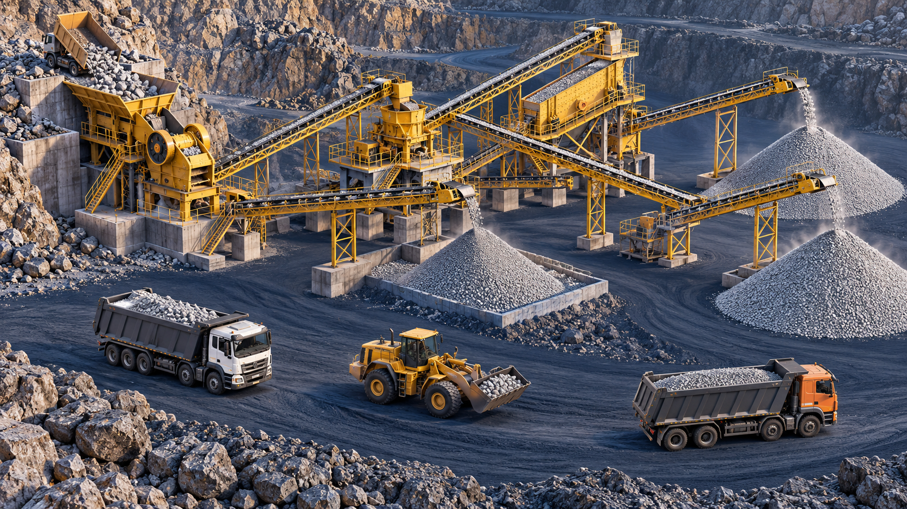
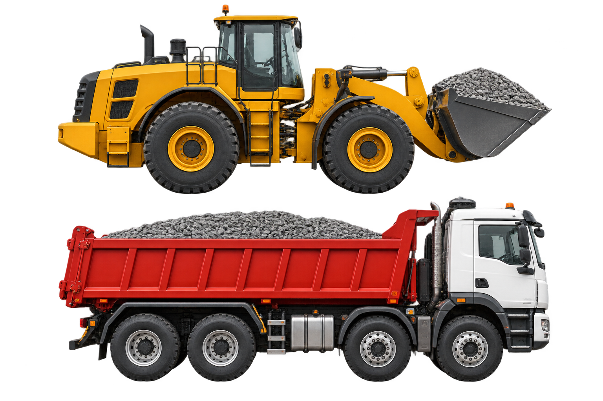

FROM OUR YARD. TO YOUR NEXT BUILD.
Strong foundations
start with the
right materials.
M-sand, stone aggregates and bricks for the work ahead. Your construction material partner in Palakkad.
Solutions for
quality sand.


01 / OUR MATERIALS
The essentials.
For every stage.
From concrete work to masonry, find the materials your project needs. Ask our team about available sizes, quantities and delivery.
02 / FROM ROCK TO READY
A lot goes into
what you build on.
Crushing, moving and sorting material is the work behind every load. Tell us what you’re building; we’ll help you discuss the right supply.
- 01
Crush
Rock is broken down into smaller material.
- 02
Convey & sort
Conveyors move material through the processing stages.
- 03
Load & dispatch
Confirm your requirements and arrange your material supply with our team.
03 / ROOTED IN PALAKKAD
Local people.
Solid foundations.
Kisan Sands And Bricks is based in Mulayankavu, Cherukode, Palakkad. We supply sand, stone aggregates and bricks for construction.
Whether you’re planning a home or organising materials for a worksite, start with a conversation. Share your material, quantity and location with our team.
Let’s talk about your projectLET’S GET YOUR PROJECT MOVING
What are you
building next?
Send us your requirements. We’ll discuss availability, pricing and delivery with you.
Mulayankavu, CherukodePalakkad, KeralaFind our location